Genéricos e Créditos
Introdução
Em Portugal, é comum a utilização dos termos "genérico" e "créditos" para designar os créditos iniciais (opening credits) e os créditos finais (closing credits), respetivamente.
Existem várias formas de introduzir os genéricos e os créditos num filme: com quadros estáticos ou com animação, com fundo sólido ou sobrepostos ao filme ou inseridos no próprio filme (ver créditos iniciais do Happy Hour).
Em curtas de animação, é comum apresentar o título no início (por vezes antecedido do estúdio) e os créditos mais detalhados no final.
Big Buck Bunny
Sacha Goedegebure, 2008. Página oficial
Início
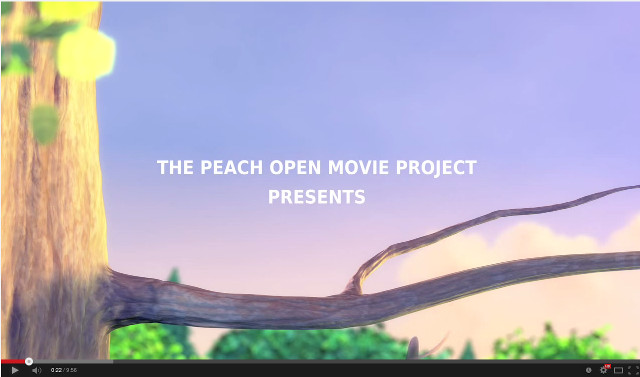 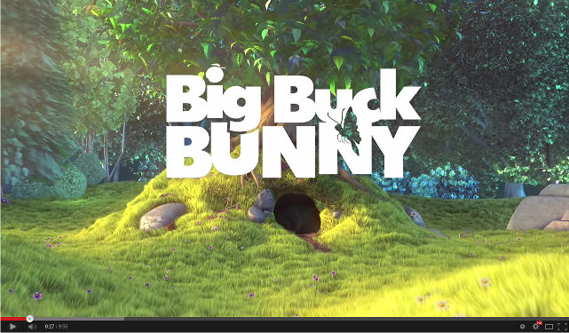Final
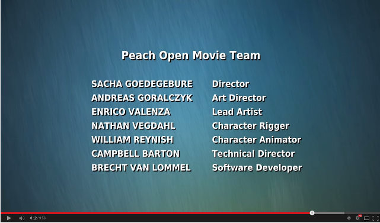 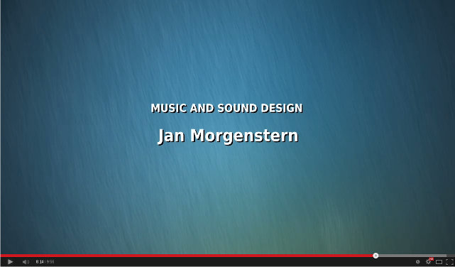 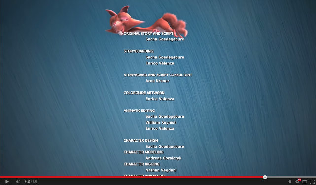 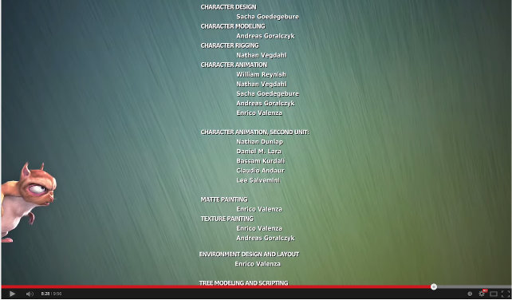 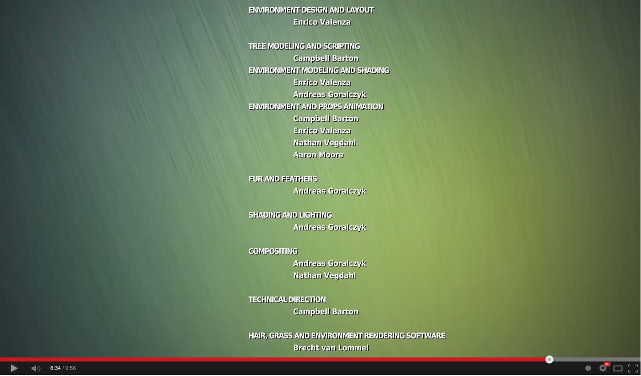 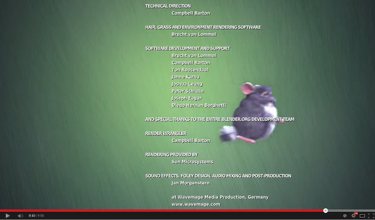 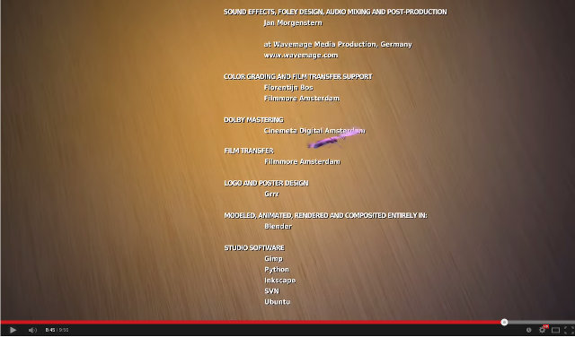 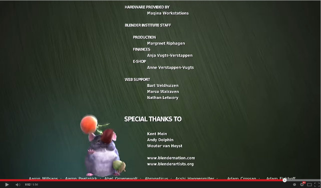 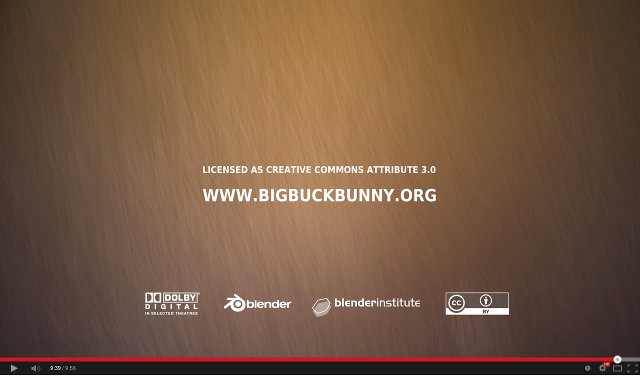
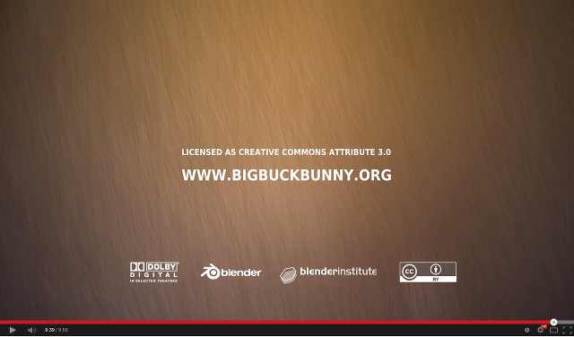
Caminandes: Gran Dillama
Pablo Vazquez, 2013. Página oficial
Início
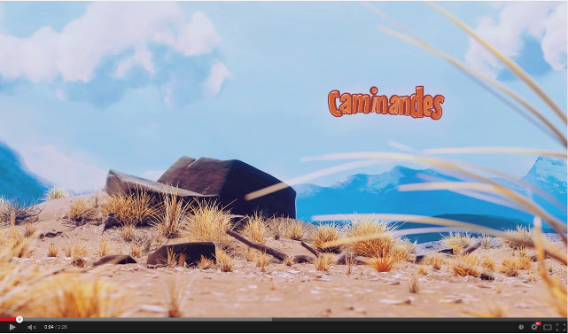Final
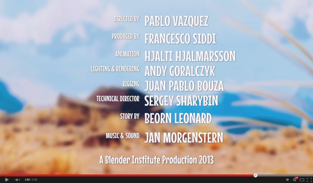 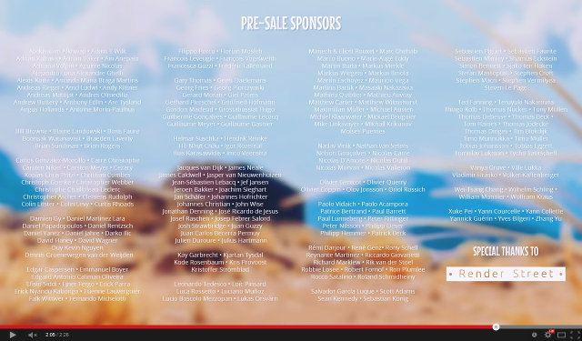 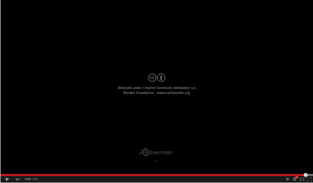Happy Hour
Mikko Aaltonen, Shareef Askar, Jyri Jernström, Sakari Niittymaa e Miika Puustinen, 2011. Filme
Início
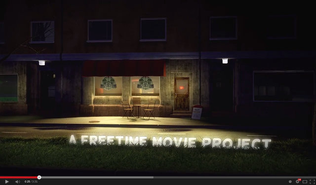 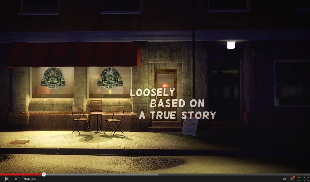 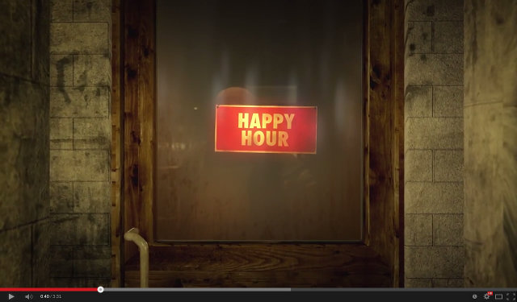Final
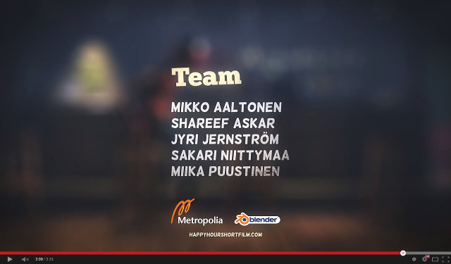 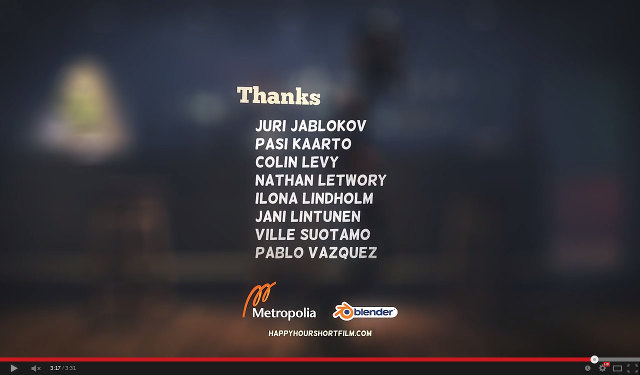 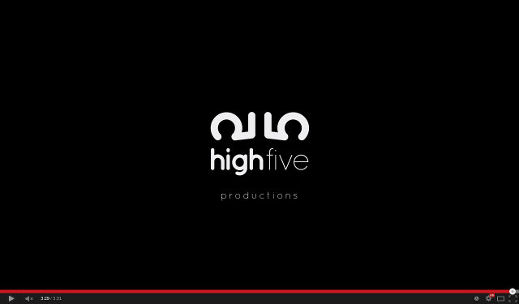En Passant
Chris Burton, 2013. Filme